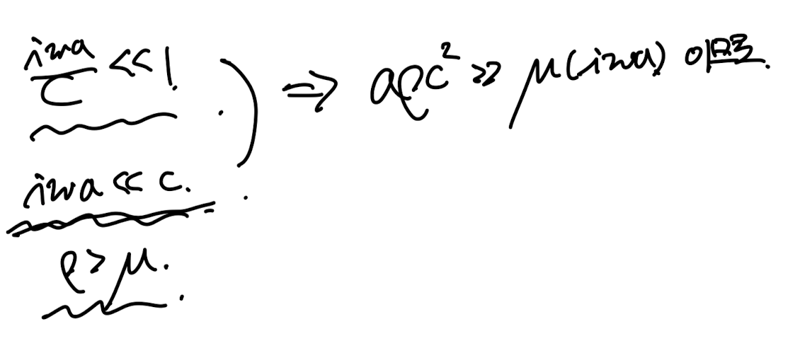
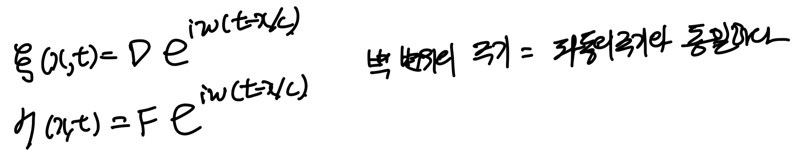
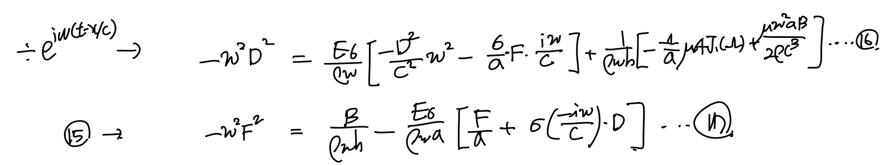
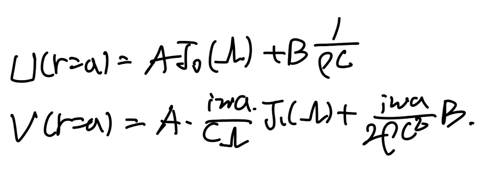
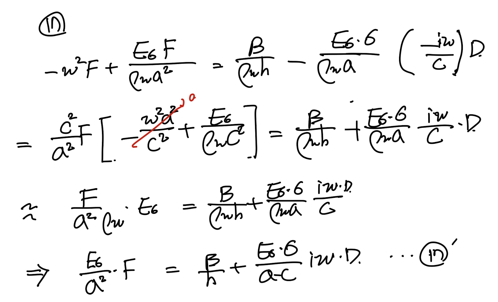

<!DOCTYPE html>
<html lang="ko">
<head>
  <meta charset="utf-8">
  <meta name="viewport" content="width=device-width, initial-scale=1">
  <title>[Pulsatile flow] 3. Coupling with Fluid motion on the elastic tube wall | Sehyeog Kim</title>
  <link rel="stylesheet" href="../../../assets/css/style.css">
</head>
<body>
  <!-- Mobile header -->
  <header class="mobile-header">
    <span class="site-title">Sehyeog Kim</span>
    <button class="menu-toggle" aria-label="Menu">&#9776;</button>
  </header>
  <div class="sidebar-overlay"></div>

  <div class="site-wrapper">
    <!-- Sidebar -->
    <aside class="sidebar">
      <div class="sidebar-bg">
        
      </div>
      <div class="sidebar-profile">
        
        <h1 class="profile-name">Sehyeog Kim</h1>
        <p class="profile-bio">AI &amp; Computational Engineering<br>Knowledge Base</p>
        <div class="profile-links">
          <a href="https://github.com/Sehyeogkim" target="_blank" rel="noopener">
            <svg viewBox="0 0 16 16" width="16" height="16" fill="currentColor"><path d="M8 0C3.58 0 0 3.58 0 8c0 3.54 2.29 6.53 5.47 7.59.4.07.55-.17.55-.38 0-.19-.01-.82-.01-1.49-2.01.37-2.53-.49-2.69-.94-.09-.23-.48-.94-.82-1.13-.28-.15-.68-.52-.01-.53.63-.01 1.08.58 1.23.82.72 1.21 1.87.87 2.33.66.07-.52.28-.87.51-1.07-1.78-.2-3.64-.89-3.64-3.95 0-.87.31-1.59.82-2.15-.08-.2-.36-1.02.08-2.12 0 0 .67-.21 2.2.82.64-.18 1.32-.27 2-.27.68 0 1.36.09 2 .27 1.53-1.04 2.2-.82 2.2-.82.44 1.1.16 1.92.08 2.12.51.56.82 1.27.82 2.15 0 3.07-1.87 3.75-3.65 3.95.29.25.54.73.54 1.48 0 1.07-.01 1.93-.01 2.2 0 .21.15.46.55.38A8.013 8.013 0 0016 8c0-4.42-3.58-8-8-8z"/></svg> GitHub
          </a>
        </div>
      </div>
      <nav class="sidebar-nav">
        <a href="/" class="nav-item nav-home">Home</a>
        <span class="nav-label">Categories</span>
        <a href="/blog/advanced-engineering-mathematics/" class="nav-item">Advanced_Engineering_Mathematics<span class="nav-post-count">14</span></a>
        <a href="/blog/agentic-ai/" class="nav-item">Agentic_AI<span class="nav-post-count">8</span></a>
        <a href="/blog/blood-flow-and-metabolism/" class="nav-item active">Blood-Flow-and-Metabolism<span class="nav-post-count">12</span></a>
        <a href="/blog/cardiovascular-diseases/" class="nav-item">CardioVascular_Diseases<span class="nav-post-count">8</span></a>
        <a href="/blog/computational-linear-algebra/" class="nav-item">Computational-Linear-Algebra<span class="nav-post-count">15</span></a>
        <a href="/blog/continuum-mechanics/" class="nav-item">Continuum-Mechanics<span class="nav-post-count">9</span></a>
        <a href="/blog/deep-learning/" class="nav-item">Deep-learning<span class="nav-post-count">14</span></a>
        <a href="/blog/finite-element-method/" class="nav-item">Finite-Element-Method<span class="nav-post-count">1</span></a>
        <a href="/blog/fluid-mechanics/" class="nav-item">Fluid_Mechanics<span class="nav-post-count">18</span></a>
        <a href="/blog/gas-dynamics/" class="nav-item">Gas_Dynamics<span class="nav-post-count">24</span></a>
        <a href="/blog/heat-transfer/" class="nav-item">Heat-transfer<span class="nav-post-count">8</span></a>
        <a href="/blog/machine-learning/" class="nav-item">Machine_Learning<span class="nav-post-count">11</span></a>
        <a href="/blog/numerical-heat-transfer-and-fluid-flow/" class="nav-item">Numerical-Heat-transfer-and-Fluid-flow<span class="nav-post-count">14</span></a>
        <a href="/blog/sensitivity-analysis/" class="nav-item">Sensitivity_Analysis<span class="nav-post-count">3</span></a>
        <a href="/blog/solid-mechanics/" class="nav-item">Solid_Mechanics<span class="nav-post-count">25</span></a>
        <a href="/blog/thermodynamics/" class="nav-item">Thermodynamics<span class="nav-post-count">14</span></a>
        <a href="/blog/viscous-flow/" class="nav-item">Viscous_Flow<span class="nav-post-count">28</span></a>
      </nav>
    </aside>

    <!-- Main content -->
    <main class="main-content">
      <div class="breadcrumb">  <a href="/">Home</a><span class="sep">/</span>  <a href="/blog/blood-flow-and-metabolism/">Blood-Flow-and-Metabolism</a><span class="sep">/</span>  <span>[Pulsatile flow] 3. Coupling with Fluid motion on the elastic tube wall</span></div>
<a href="/blog/blood-flow-and-metabolism/" class="back-link">&larr; Back to Blood-Flow-and-Metabolism</a>
<div class="page-header"><h1>[Pulsatile flow] 3. Coupling with Fluid motion on the elastic tube wall</h1></div>
<div class="post-meta"><span class="meta-item"><span class="meta-label">Date:</span> 2024-11-17</span><span class="meta-item"><span class="meta-label">Category:</span> Blood-Flow-and-Metabolism</span><span class="meta-item"><span class="meta-label">Source:</span> <a href="https://jeffdissel.tistory.com/125" target="_blank" rel="noopener">link</a></span></div>
<article class="post-content"><p>지금 우리는<br />
Pulsatile flow<br />
Elastic thin tube에서<br />
유체와 고체의 변형을 고려한<br />
유체의 유동에 대해서 분석하고자 한다.<br />
지지난 포스터에서<br />
어렵게 유체의 속도와 압력을 유도하였고,<br />
https://jeffdissel.tistory.com/123<br />
[Pulsatile flow] Flow on a elastic tube<br />
혈관의 흐름을 분석하기 위해서,실제 혈관의 벽면의 움직임도 고려해 주어야 한다. 이전 포스터에서는 혈관 벽이 고정 rigid wall가정으로 혈액의 속도장을 계산하였다면,(사실 큰 동맥 이외에<br />
jeffdissel.tistory.com<br />
지난포스터에서<br />
고체의 변형과 shear stress, pressure 관계식을<br />
https://jeffdissel.tistory.com/124<br />
[Pulsatile flow] 2. Force on the elastic tube wall<br />
지난 포스터에서 우리는,https://jeffdissel.tistory.com/123 [Pulsatile flow] Flow on a elastic tube혈관의 흐름을 분석하기 위해서,실제 혈관의 벽면의 움직임도 고려해 주어야 한다. 이전 포스터에서는 혈관<br />
jeffdissel.tistory.com<br />
다음과 같이 유도하였다.<br />
<br />
먼저 유체의 압력은 우리가 지지난 포스터에서 이미<br />
유도한 그대로 대입할 예정이다.<br />
<br />
이제 두번째로<br />
Shear stress를 유체의 성질로 표현해보자.<br />
no-slip bc, axissymetric으로 인해<br />
<br />
<br />
<br />
<br />
<br />
shear stress는 13번 식으로 표현 할 수 있다.<br />
여기에 우리가 지지난 포스터에서 구한<br />
베셀함수로 표현한 속도를 13번 식에 대입해주자.<br />
<br />
여기에 베셀함수 성질그리고,<br />
r=a일때를 우리는 구하고 있기 때문에,<br />
이를 이용하여, 1번항은 다음과 같이 정리된다.<br />
<br />
2번식 정리를 위해 우리가 정의하였었던,<br />
(유체 속도식 유도를 위하여)<br />
오메가, 람다를 remind 하고 들어가자.<br />
<br />
+ 감마 = iwa/c - 0 으로 근사하며,<br />
(파동의 파장 &gt;&gt; 튜브 반지름)<br />
이때 베셀함수의 성질로 다음과 같이 정리 정리된다.<br />
<br />
자 위 도구들을 가지고 2번식을 정리해보자.<br />
<br />
<br />
<br />
<br />
<br />
<br />
위 식의 마지막 과정은 다음의 가정의 포함되어 있습니다.<br />
<br />
최종적으로,<br />
우리가 정리한 1,2번식을 이용하여 새로운 shear stress 방정식 13을<br />
다음과 같이 나타낼 수 있다.<br />
<br />
지난 포스터에서 유도한<br />
고체 변위 stress 식 10,11에<br />
<br />
유체 shear stress, pressure 식 12,13을 대입해보자.<br />
<br />
최종적으로 구한 14,15 식은<br />
유체의 property(밀도, pusatile flow의 진동수)와<br />
시공간에 따른 고체의 Displacement 의 관계식이다.</p>
<hr />
<p>여기서 이제 우리는 고체 유체 Surface<br />
Boundary condition을 생각해보자.<br />
<br />
<br />
<br />
<br />
첫번째 식의 의미는<br />
유체의 벽면에서의 속도 =<br />
고체의 element의 시간에 따른 변위<br />
(고체와 유체 surface)<br />
두번째 식의 의미는<br />
유체와 고체가 surface에서 만나므로,<br />
결국 벽면의 변위도 유체와 같은 진동수를 가지고 진동.<br />
(하지만 중요한 것은 유체와 진동수는 동일하지만,<br />
같은 phase의 운동은 아니다)<br />
(저도 처음에 무슨 말이야 이게? 라고 생각을 했지만<br />
이 부분을 고민하시면서 계속 블로그를 보시면<br />
해답이 나올 겁니다 ㅎㅎ)<br />
아무튼, 위에서<br />
두번째 가정<br />
을<br />
14번 식에 먼저 대입해주자.<br />
<br />
이후 정리해주면 밑의 16번식이 도출된다.<br />
같은 방법으로 15번식 +<br />
두번째 가정<br />
-&gt; 17번 식<br />
<br />
이제<br />
첫번째 가정 + 두번째 가정<br />
을 통해<br />
<br />
여기서 유체의 속도를<br />
계속해서 나오는<br />
<br />
파동의 파장(L) &gt;&gt; 반지름 가정(a)<br />
r=a에서의 속도는 다음과 같이 유도되었다.<br />
<br />
위 속도장을 BC1,2 식에 대입해주면 18,19 식이 유도된다.<br />
<br />
자 여기서, 16 17번식을 파장&gt;&gt;반지름 가정을 통해서,<br />
정리할 수 있다.<br />
<br />
16번 식 우항2번째 정리 -&gt; 16'식 유도<br />
<br />
17번 식 정리 -&gt; 17'식<br />
최종적으로 우리는 A,B,D,F 상수 4개를 위한 식을<br />
Boundary condition으로 유도하였다.<br />
<br />
자 다음포스터에서 위의 계수 4개 방정식 4개이므로,<br />
연립방정식의 해를 구해보자.</p></article>
      <footer class="site-footer">
        <p>&copy; 2026 Sehyeog Kim. Built with gitfolio-inspired theme.</p>
      </footer>
    </main>
  </div>

  <script src="../../../assets/js/main.js"></script>
</body>
</html>